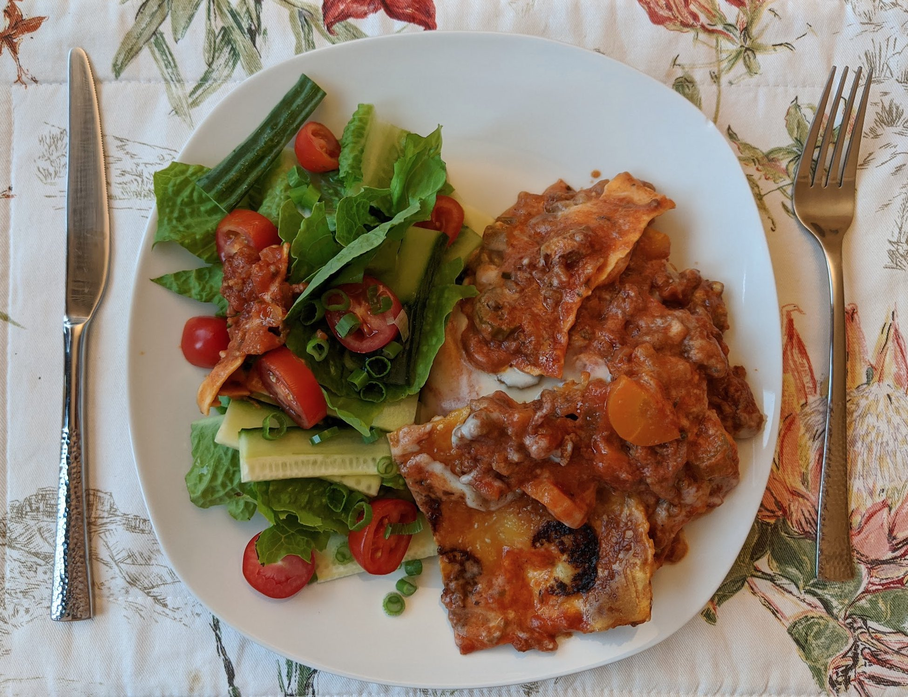

Ingredients
Ragù:
- 500g mince
- 2 onions
- 3-5 carrots
- 3-5 stalks of celery
- 2x700ml passata
- 4 garlic cloves
- 2 sprigs of rosemary
- 2 bay leaves
- Small bunch of sage
- 1 red chilli (or black pepper)
- 1 glass red wine
Béchamel sauce:
- 70g butter
- 2-3 heaped tbsp flour
- 750ml milk (at room temperature if possible)
- Grated nutmeg
- Salt
Other:
- Lasagne sheets (quantity TBC)
- Optional side salad things
Instructions
Béchamel sauce:
- Melt the butter in a saucepan and stir in the flour.
- Gradually add milk, stirring continuously.
- Add nutmeg and salt as you bring it to the boil, stirring well as it begins to thicken.
Ragù:
- Dice onion, carrots, and celery before starting.
- Fry onion in some olive oil with the crushed garlic.
- Pierce the chilli and add to the frying mix along with the mince and fresh herbs.
- After a few minutes, add in the carrots and celery and allow to soften.
- Next, add in the passata and season to taste.
- Add red wine and allow to simmer for 30min.
Lasagne:
- Layer pasta sheets, then ragù, then béchamel sauce, parmigiano and repeat until you run out.
- Finish with a thin top layer of sauces and grated parmigiano.
Serves 8.